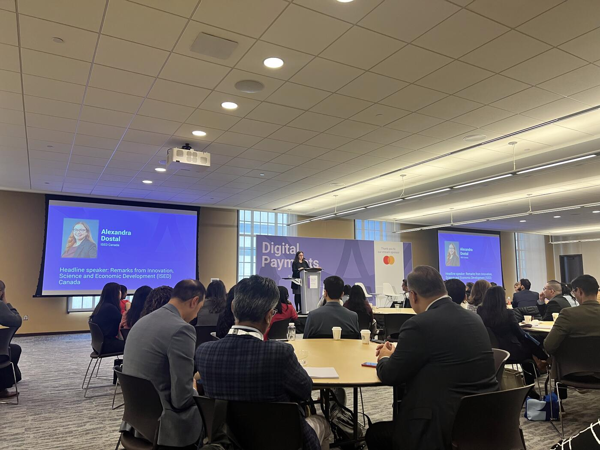
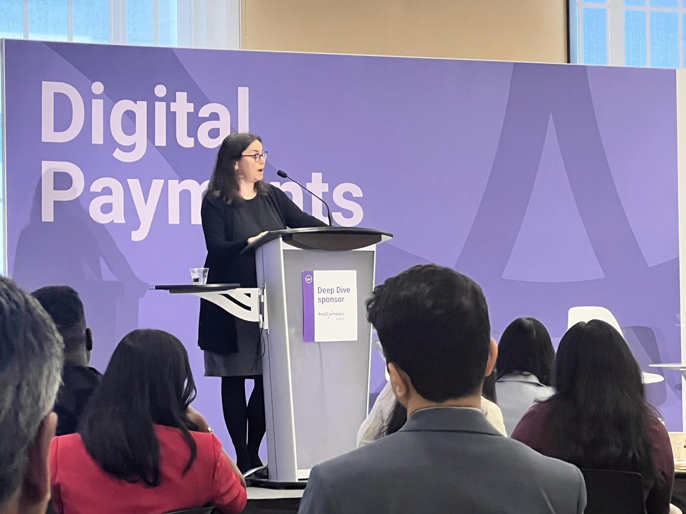

AI as a General-Purpose Technology
Alexandra Dostal framed AI as a foundational economic transformation already reshaping Canada's financial infrastructure and broader economy. She emphasized that artificial intelligence is no longer a future concept, but a present-day force influencing "how decisions are made, how risks are managed, how services are delivered, and how value is created" across sectors including healthcare, manufacturing, transportation, and financial services.
She highlighted how AI is increasingly embedded in payment systems and financial infrastructure, making them "more intelligent, more adaptive, and more deeply embedded in the broader digital economy." AI is already helping institutions manage risk, detect fraud, support compliance processes, and improve customer service operations.
Dostal described AI as what economists call a "general purpose technology," comparing its long-term impact to transformative technologies such as electricity and the internet.
Canada's Starting Position

She stressed that Canada enters this transformation "from a position of strength," pointing to the country's investment in AI research and policy leadership over the past decade.
- The federal government's Pan-Canadian AI Strategy was launched nearly ten years ago — "the first national AI strategy anywhere in the world."
- The strategy helped establish and strengthen Canada's leading AI research institutes: Mila (Montreal), Vector Institute (Toronto), and Amii (Edmonton) — attracting "some of the world's leading researchers right here to Canada."
- Canada is one of the few countries with a domestically developed foundational AI model company — Cohere was cited as an example of Canada's growing capabilities in large language models.
On the international stage:
- Canada co-founded the Global Partnership on Artificial Intelligence (GPAI) with France in 2020.
- Canada's G7 presidency in 2025 made AI "central" to the agenda, with initiatives continuing under France's current presidency.
- The Canadian AI Safety Institute was launched in 2024 to advance the science of AI safety; Canada is now part of an international network focused on advanced AI measurement, evaluation, and safety research.
Throughout, Dostal balanced enthusiasm for AI's economic potential with the need for responsible deployment — "support innovation while ensuring that AI is developed responsibly and deployed responsibly."
The Next Phase: Deployment at Scale
Dostal argued that Canada's AI strategy is now entering a new phase: moving from research leadership to large-scale deployment and commercialization.
For years Canada's major advantage had been "research and discovery," but the focus is now shifting toward "deployment at scale."
"The next phase of Canada's leadership in AI will be defined not only by what we invent, but what we implement."
The federal government's strategy uses the phrase "AI for all" — enabling Canadians to "develop and deploy AI on their own terms, sovereign and secure."
The approach focuses on three parallel priorities: infrastructure, adoption, and governance.
"These three things, infrastructure, adoption, and governance, they're not sequential. We're kind of building the plane as we fly it."
Infrastructure: $2B Sovereign Compute

Dostal highlighted the federal government's sovereign compute strategy launched in 2024, describing it as a CAD $2 billion investment aimed at ensuring Canadian researchers, institutions, and businesses have secure access to the high-performance computing resources needed to compete globally.
The strategy is designed to help Canadian innovators "stay at the cutting edge" while enabling them to commercialize and scale their products domestically.
At the same time, sovereignty should not be interpreted as technological isolation. Quoting Canada's Minister of Artificial Intelligence and Digital Innovation:
"Sovereignty is not solitude."
She referenced recent collaboration initiatives such as the federal government's sovereign technology alliance with Germany.
Adoption Across the Economy
Dostal argued that the largest economic benefits from AI will come not only from developing advanced technologies, but from "mainstreaming" their adoption across industries — particularly among small and medium-sized enterprises.
She outlined federal initiatives supporting this goal, delivered through:
- Canada's AI institutes
- Global innovation clusters
- Regional development agencies
The federal government is also positioning itself as a direct user of AI technologies to strengthen domestic demand:
"If we want a strong domestic AI ecosystem, Canadian institutions need to be prepared to be early customers of Canadian solutions."
"Canada should, and tries to be, its own best customer."
She referenced the federal government's Buy Canadian procurement approach aimed at increasing sourcing from Canadian suppliers.
Governance and Public Trust
Quoting Minister Chama: "Technology moves at the speed of innovation, but adoption moves at the speed of trust."
Canada's approach to AI governance is "pragmatic" and grounded in existing legal and regulatory frameworks — privacy laws, competition law, and the Criminal Code.
AI Governance, Public Trust, and Financial Services
In the final portion of her keynote, Dostal focused specifically on AI governance, public trust, and the role Canada's financial sector will play.
The financial services sector has already been "at the forefront of developing frameworks for model risk management, algorithmic accountability, and consumer protection," but regulatory systems must continue evolving.
Legislative Initiatives Before Parliament
- Bill C-16 — would expand protections against the non-consensual distribution of intimate images to include synthetic or AI-generated content.
- Bill C-25 — would criminalize the use of AI-generated deepfakes designed to impersonate political candidates or election officials with the intent to mislead voters.
These reflect the government's effort to focus on "the most harmful uses of AI" — particularly where risks to individuals, democratic institutions, and public trust are highest.
Standards, Institutional Capacity, International Cooperation
The Canadian AI Safety Institute is central to evaluating advanced AI systems and addressing emerging risks while advancing interoperable industry standards.
Funding from the Pan-Canadian AI Strategy enabled the Standards Council of Canada to establish an AI and data governance standardization collaborative aimed at creating practical implementation tools and industry standards.
"This work is really critical — standards and governance frameworks help translate 'high-level principles into real-world implementation.'"
Internationally, Canada continues to engage through GPAI, the United Nations, and the G7 to help shape global AI norms based on principles that are "pragmatic, flexible, and help increase trust."
Canada's governance philosophy in one line:
"Trust is not a barrier to innovation. It's really what we need to have innovation scale."
A New National AI Strategy
Dostal introduced the government's upcoming national AI strategy, expected to be released soon. The development process was one of the most publicly engaged consultations in the history of the department.
According to Dostal, the consultation generated more than 11,000 submissions — "the most in the history of our department."
The new strategy will take a "whole economy approach" with six major pillars:
- Protecting Canadians and safeguarding democracy — stronger privacy laws, online safety measures, AI safety capabilities, and secure government systems.
- Empowering Canadians — AI education, training, and inclusion of Canadian voices, languages, and culture.
- Accelerating AI adoption — among small and medium-sized businesses; modernizing public service delivery.
- Building sovereign compute infrastructure at scale — while continuing to grow Canada's AI research and talent ecosystem.
- Scaling Canadian AI companies — leveraging government procurement and public-sector demand.
- Trusted international partnerships — align standards, co-invest in innovation, help Canadian firms access global markets while promoting democratic values in AI governance.
What This Means for Financial Services
Turning specifically to the financial industry audience, Dostal said the sector is already "a front-runner in AI adoption" because of its longstanding investments in analytics, compliance systems, and risk management frameworks.
She argued that AI could significantly improve productivity, efficiency, fraud prevention, risk management, and product innovation across financial services — and predicted that AI would continue to play "a central role in shaping the future of financial services."
At the same time, she cautioned that AI introduces new challenges around fairness, bias, fraud, and cybersecurity, warning that AI can "amplify both the scale and complexity" of those risks.
Still, she emphasized that the financial sector is well-positioned to remain on the leading edge of responsible AI deployment. The federal government intends to continue working closely with industry to ensure governance frameworks remain "pragmatic and practical."
Three Priorities for Organizations Adopting AI
As part of her closing advice:
- High-quality data management — "AI is only as good as the data that it is fed."
- Invest in the people, not just the tools — AI literacy remains one of the largest barriers to adoption across organizations.
- Deploy AI responsibly — referencing the federal government's voluntary code of conduct for generative AI released in 2023; 46 organizations have already signed on, committing to transparency, accountability, and safety.
"An Inflection Point" — Closing
Dostal described the current moment as "an inflection point" for Canada's AI future.
"The foundational research has been done, the early applications are live, the interest is significant. Now the challenge is how to deploy AI at scale across the whole economy in a way that is trustworthy and works for everybody."
She acknowledged the scale of the challenge: Canada must simultaneously build infrastructure, governance systems, and adoption frameworks in a fast-moving global environment.
"Now it's about turning that potential into momentum, and to harness that momentum to the benefit of all Canadians."
Key Takeaways
- AI is a general-purpose technology — comparable to electricity and the internet.
- Canada launched the first national AI strategy in the world (~10 years ago); AI institutes at Mila, Vector, Amii; Cohere as a domestically-built foundation model.
- GPAI co-founded with France (2020); Canada's G7 presidency in 2025 put AI front and center.
- Sovereign compute: CAD $2B investment (2024); "Sovereignty is not solitude" — alliance with Germany.
- "Canada should, and tries to be, its own best customer" — Buy Canadian procurement to seed domestic AI demand.
- Bills before Parliament: C-16 (synthetic intimate-image protections), C-25 (election deepfake offenses).
- 11,000+ submissions to the national AI strategy consultation — a department record.
- Six-pillar national strategy: protect democracy, empower people, accelerate adoption, sovereign compute, scale Canadian AI firms, trusted international partnerships.
- 46 organizations have signed onto Canada's voluntary GenAI code of conduct (2023).
- Financial services framed as a "front-runner" in responsible AI deployment.
- The defining quote: "Trust is not a barrier to innovation. It's what we need to have innovation scale."
- And: "Technology moves at the speed of innovation, but adoption moves at the speed of trust."